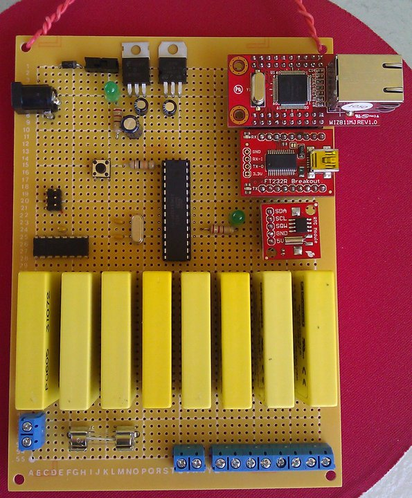
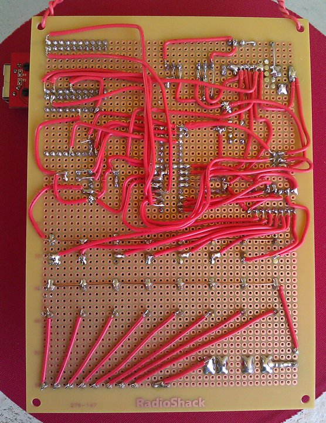
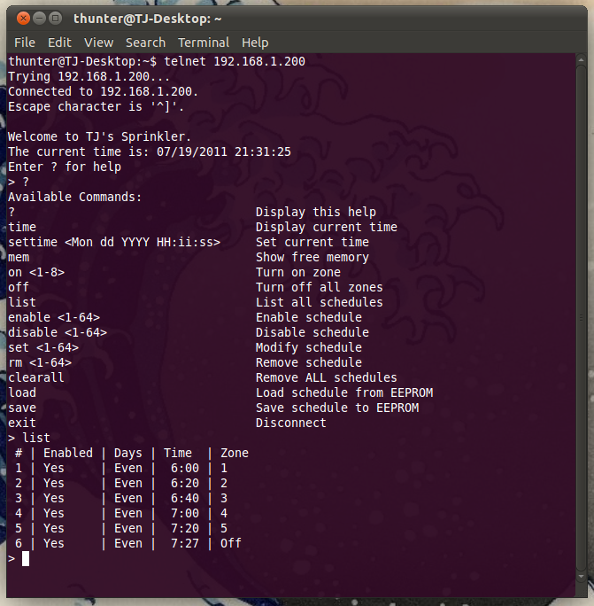

Sprinkler controller software for arduino.
- Telnet server using the Wiznet ethernet module
- Time functions using a DS1307
- Controls transistors, triacs, relays or solid state relays via a 74HC595 shift register.
- Watering Zones that can be manually turned on or off via telnet.
- Scheduling to automatically turn zones on or off at certain times and days.
Dependencies
EthernetDHCP.h from http://gkaindl.com/software/arduino-ethernet
RTClib.h from https://github.com/adafruit/RTClib
License
MIT License
Authors
TJ Hunter (tjhunter@gmail.com)
Download
You can download this project in either
zip or
tar formats.
You can also clone the project with Git
by running:
$ git clone git://github.com/Hypnopompia/Arduino-Sprinkler
Photos and Screenshots


